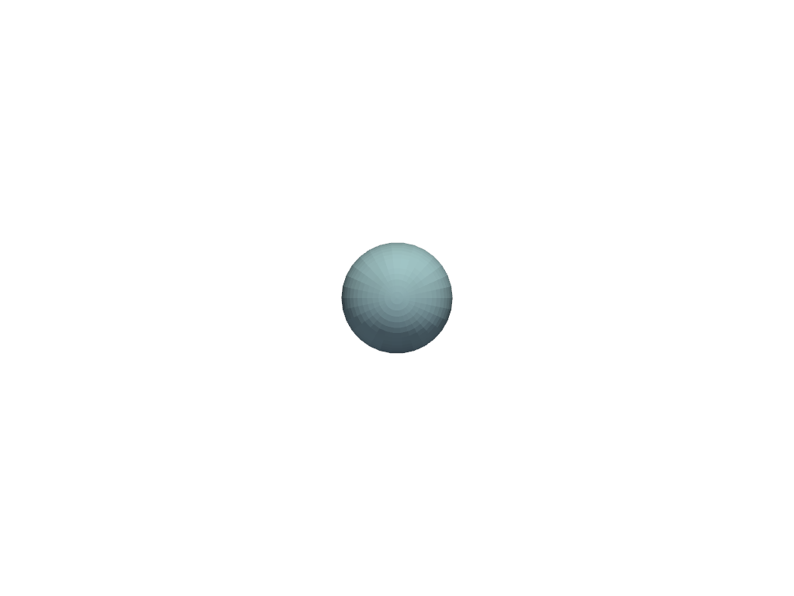

注釈
Go to the end to download the full example code
アニメーション#
この例では，簡単なアニメーションを作成する方法を示します．タイマーを使って，球体をシーン全体に動かします．
VTK Animation Examples に触発されました．
import pyvista as pv
sphere = pv.Sphere()
pl = pv.Plotter()
actor = pl.add_mesh(sphere)
def callback(step):
actor.position = [step / 100.0, step / 100.0, 0]
pl.add_timer_event(max_steps=200, duration=500, callback=callback)
cpos = [(0.0, 0.0, 10.0), (0.0, 0.0, 0.0), (0.0, 1.0, 0.0)]
pl.show(cpos=cpos)
Total running time of the script: (0 minutes 0.368 seconds)